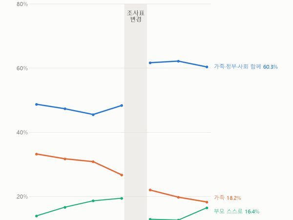
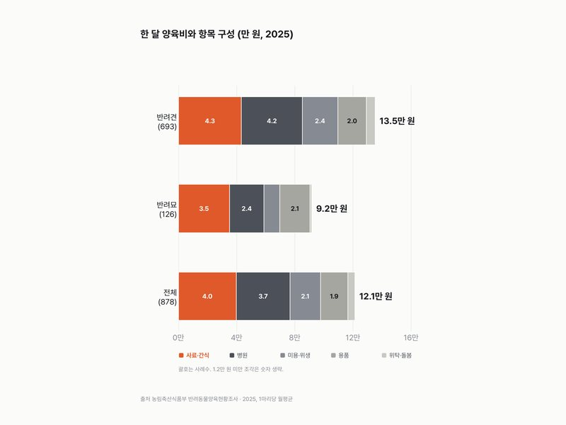

카테고리
돈·자산
24편 · 최신 글부터
 화제돈·자산2.8%
화제돈·자산2.8%소비자물가 2.8%, 석유류는 14.9%
소비자물가조사 화제돈·자산1경 4,200조
화제돈·자산1경 4,200조가계 순자산 1경 4,200조 원, 2008년의 2.8배(2025 잠정)
국민대차대조표 화제돈·자산4.88%
화제돈·자산4.88%주담대 금리 4.88%, 2015년 이후 가장 높아(2026.9)
한국은행 가중평균금리 화제돈·자산174.4%
화제돈·자산174.4%가계 빚, 1년 소득의 174.4%(2024), 2021년엔 194.3%
OECD 가계부채 화제돈·자산9.4%
화제돈·자산9.4%한국 가계순저축률 9.4%(2024), 1988년엔 24.7%
OECD 가계순저축률 화제돈·자산4.3만 원
화제돈·자산4.3만 원카드 한 번 결제 평균 4.3만 원, 2005년엔 9.8만 원
지급수단별 통계(한국은행) 화제돈·자산64.0%
화제돈·자산64.0%해외직구 열에 여섯은 중국, 64.0%(2026년 1~3분기)
온라인쇼핑동향조사 화제돈·자산87.9만 원
화제돈·자산87.9만 원고령층 연금 월평균 87.9만 원, 남자 113.2만·여자 61.3만
고령층 부가조사 화제돈·자산36.0%
화제돈·자산36.0%집 가진 가구 56.9%, 30대는 42.4% → 36.0%
주택소유통계 화제돈·자산37.0%
화제돈·자산37.0%60대 가구 흑자율 37.0%로 가장 높다, 39세 이하 29.9%
가계동향조사 화제돈·자산33.0%
화제돈·자산33.0%1년 새 소득 순위가 바뀐 사람 33.0%, 7년 중 가장 적다
소득이동통계 화제돈·자산1,858원
화제돈·자산1,858원휘발유 리터당 1,858원, 경유와 차이는 14원
석유제품가격통계 화제돈·자산4.3%
화제돈·자산4.3%외식 제외 개인서비스 물가 4.3%↑, 전체 2.9%
소비자물가조사 돈·자산22.2만 → 45.8만 원
돈·자산22.2만 → 45.8만 원학생 1인당 사교육비 월 22.2만 → 45.8만 원
초중고사교육비조사 돈·자산22.7% → 29.1%
돈·자산22.7% → 29.1%내 세대 계층 상승 가능성 높다, 22.7% → 29.1%
사회조사 돈·자산27.3% → 17.7%
돈·자산27.3% → 17.7%1년 새 빚이 늘었다는 가구주, 27.3% → 17.7%
사회조사
돈·자산33.2% → 18.2%부모 노후는 가족이 돌봐야, 33.2% → 18.2%
사회조사
돈·자산12.1만 원반려동물 1마리, 한 달 양육비 12.1만 원
반려동물양육현황조사 돈·자산11.8% → 28.0%
돈·자산11.8% → 28.0%소득에 만족한다, 2011년 11.8% → 2025년 28.0%
사회조사 돈·자산52.0% → 68.6%
돈·자산52.0% → 68.6%노후 준비, 60세 이상은 늘고 20대는 줄었다
사회조사 돈·자산77.5%
돈·자산77.5%온라인쇼핑 94조 → 275조 원, 모바일 78%
온라인쇼핑동향조사 돈·자산+42%
돈·자산+42%1인 가구 지출 6년 새 +22%, 오락·문화는 +42%
가계동향조사 돈·자산+14% vs +49%
돈·자산+14% vs +49%8년 새 순자산, 전체 +49% · 30대 가구 +14%
가계금융복지조사 돈·자산+44.1%
돈·자산+44.1%10년 새 물가 23%, 먹거리는 44% 올랐다
소비자물가조사